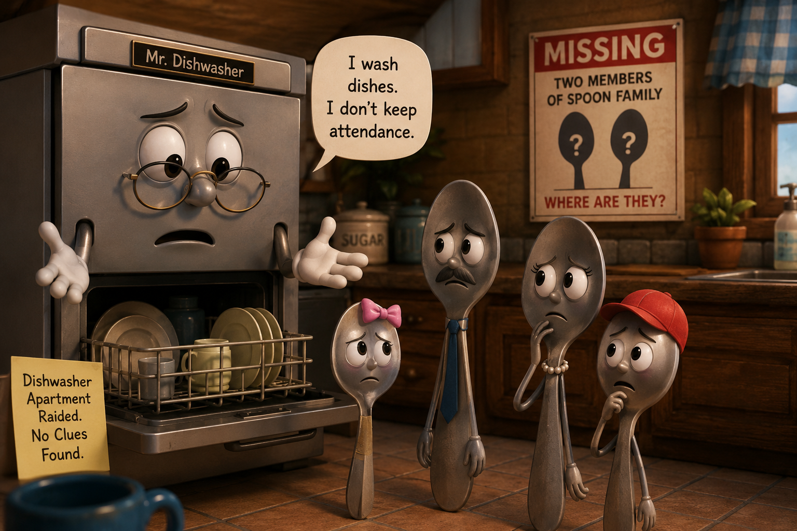

🥄 HHIB Episode 6: The Missing Spoon Family Members
HHIB is investigating another disturbing disappearance from Harmony House.
Two members of the Spoon Family are missing.
Unfortunately, this is not the first time something like this has happened.
Some time ago, Mr. Home Owner admitted that he had thrown two members of another Spoon Family into Mr. Garbage's Well.
A Search & Rescue Operation followed.
It failed.
Those two spoons were never found again.
And now, two members of a different Spoon Family have disappeared.
No one knows where they are.
No one knows whether they are together.
HHIB cannot even confirm whether they are still alive.
🔎 The Raid on Mr. Dishwasher's Apartment

Naturally, one of the first places investigators searched was Mr. Dishwasher's apartment.
Dr. Z personally questioned him.
Dr. Z: “Mr. Dishwasher, two members of the Spoon Family are missing. What do you know?”
Mr. Dishwasher: “Nothing.”
Dr. Z: “Nothing?”
Mr. Dishwasher: “They come. They go. I wash dishes. I don't keep attendance.”
Dr. Z: “Were they in your apartment recently?”
Mr. Dishwasher: “Dr. Z, have you seen how many residents pass through my apartment every day?”
Dr. Z: “That was not my question.”
Mr. Dishwasher: “Then I would like to speak to my lawyer.” 😂
HHIB subsequently conducted a full raid on the apartment.
No missing spoons were found.
Mr. Dishwasher and the other residents were unable to provide any useful clue.
For the moment, HHIB has no evidence to hold Mr. Dishwasher responsible.
🍚 A Possible Lead: Mr. Big Sugar Container
There is, however, one possible lead.
One of the missing spoons may have visited Mr. Big Sugar Container's apartment.
Unfortunately, there is another complication.
Mr. Big Sugar Container recently changed apartments.
Dr. Z stared at the case file.
Dr. Z: “Old apartment or new apartment?”
Assistant Inspector: “Unknown.”
Dr. Z: “Did the spoon move with him?”
Assistant Inspector: “Unknown.”
Dr. Z: “Did anyone actually see the spoon visiting him?”
Assistant Inspector: “Not exactly.”
Dr. Z: “Excellent. Our strongest lead is based entirely on things we don't know.” 😂
🗑️ The Shadow of Mr. Garbage's Well
And there is one fact nobody at HHIB can forget.
Two members of another Spoon Family disappeared previously after Mr. Home Owner threw them into Mr. Garbage's Well.
They were never recovered.
Dr. Z therefore asked Mr. Home Owner the obvious question.
Dr. Z: “You haven't thrown any spoons into Mr. Garbage's Well recently, have you?”
Mr. Home Owner: “No.”
Dr. Z: “You're sure?”
Mr. Home Owner: “Yes.”
Dr. Z: “Good. Because we already have one unresolved Spoon case involving you.”
Mr. Home Owner has not been accused in the current disappearance.
For now. 😂
📁 Current HHIB Case Record
Missing residents: Two Spoon Family members.
Mr. Dishwasher's apartment: Searched.
Evidence found: None.
Mr. Big Sugar Container: Possible lead.
Complication: Recently changed apartments.
Previous Spoon Family Search & Rescue Operation: Unsuccessful.
Current whereabouts: Unknown.
Case status: OPEN. 🔎
🕵️♀️🕵️♂️ Junior Detectives — HHIB Needs Your Help!
There are now several possibilities, but very little evidence.
Where should HHIB search next?
Should investigators search Mr. Big Sugar Container's old apartment? His new apartment? Should Mr. Garbage's Well be searched again? Or is there another place in Harmony House that investigators have completely overlooked?
And one more important question:
Do you think the two missing spoons are together — or did they disappear separately?
Junior Detectives, examine the clues carefully and send HHIB your best theory.
CASE OPEN — TWO SPOONS STILL MISSING. 🥄🥄🔎